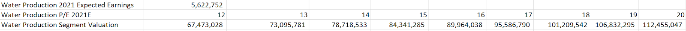
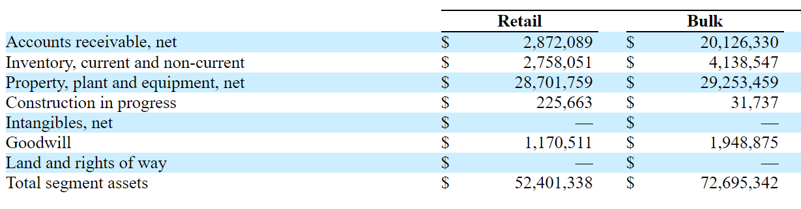
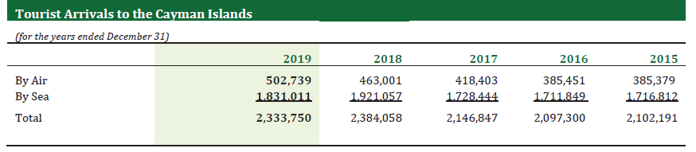
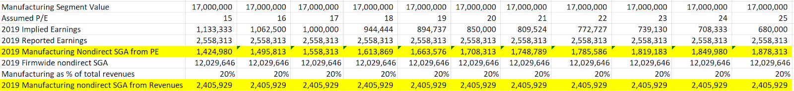
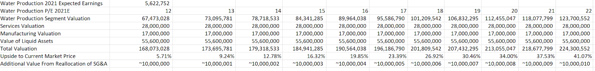

Long Thesis
Consolidated Water Company
Summary
CWCO is down over 40% from 2020 highs due to several shocks to its businesses and uncertainties in its negotiations with regulators. However at present its market cap implies basically 10-12x 2021E earnings (earnings without COVID-19 impact) of its profitable water production businesses. The company has virtually no debt load and ample liquidity that should justify a higher multiple, and this higher multiple should be realized when agreements with the Cayman Islands government are reached and when the negative impacts of a project cancellation (which have been adequately priced in) stop impacting the income statement. Overall I believe the company is undervalued by at least 20-30% with a built in call option depending on the developments of planned projects that were recently cancelled, and such an investment opportunity should be quite rare in the utilities industry especially given the overall recent market performance.
Company Background
As part of its segment breakdowns, CWCO attributes all non-direct SG&A expenses to its retail segment, making it more difficult to value each segment separately. Based on the low P/E multiples for which CWCO acquired other segments of its businesses (which will be addressed below), I believe this accounting method understates retail water earnings, while overstating that of other segments. Thus for the purpose of this valuation, I will consider the retail and bulk water production segments together since the business operations are largely the same; CWCO manages desalination plants to produce water which is eventually delivered to end consumers. In addition, these two segments have the same drivers of supply and demand; mainly alternative supplies of water are affected by rainwater and demand is driven by tourist arrivals and the resident population of the Cayman Islands and Bahamas. In projecting future revenues, I make the following assumptions: (See Appendix 1)
- Retail Water Operations (38% of 2019 revenue) in which CWCO provides water directly to customers in the Seven Mile Beach and West Bay areas of the Cayman Islands. This operation was previously part of an exclusive retail license issued by the Cayman Islands government, but the license has expired in 2018 and has not been renewed. CWCO has continued to supply water under the conditions of the previous license, but the government regulator has stated intentions to alter the terms of the exclusive license and denied previous requests to raise prices.
- Bulk Water Operations (39% of 2019 revenue) in which CWCO provides water to government-owned utilities in the Bahamas and Cayman Islands.
- Manufacturing Operations (20% of 2019 Revenues) in which CWCO manufactures specialized and custom products related to desalination and water utilities. Production is headquartered in Florida and substantially all customers are American.
- Services Operations (3% or 2019 Revenues) in which CWCO and its subsidiaries provide operations and management services of water and wastewater plants in the United States, British Virgin Islands, and Mexico.
- To be conservative, I will not explicitly reallocate SGA expenses away from this segment, but I will make the argument below that doing so could increase the valuation of this segment by over $15 million
CWCO’s market price has fallen by 44% from 2020 highs due to major headwinds in its services operations, uncertainty regarding retail operations, and recent price cuts in the bulk water operations. First in June 2020, the Baja California government cancelled the Rosarito desalination plant project to the surprise of investors and the company, which had already invested at least $20 million in land alone into the project (Appendix 2). There is uncertainty concerning the future of the project as the CWCO’s affiliates have sued to recover costs, yet there have also been talks of resuming the project on a smaller scale as governor Jaime Bonilla had always been a public proponent of the project.
In addition, the retail water operations include more risks than average utilities as the CWCO currently does not have an active service agreement with Cayman Islands government regulator. The previous exclusive license for the Seven Mile Beach and West Bay areas of the Grand Caymans expired in 2018 and has not been renewed. For the previous 2 years, CWCO has been supplying water on a good faith basis under the previous terms of the license as the terms could not be reached with the government. Instead government regulators have denied requests for CWCO to raise prices in 2017 and stated that they intend to amend future agreements to include price cuts.
Lastly in its Bulk Water Operations, CWCO manages three desalination plants for the state-owned utility in the Cayman Islands and the service contracts for these plants all expired in 2019. CWCO managed to renew all three contracts but at approximate reductions in price per gallon of freshwater of 25%, 25% and 29% from 2018 prices for the three plants.
Valuation by Parts
Water Production Plant Management
As part of its segment breakdowns, CWCO attributes all non-direct SG&A expenses to its retail segment, making it more difficult to value each segment separately. Thus for the purpose of this valuation, I will consider the retail and bulk water production segments together since the business operations are largely the same; CWCO manages desalination plants to produce water which is eventually delivered to end consumers. In addition, these two segments have the same drivers of supply and demand; mainly alternative supplies of water are affected by rainwater and demand is driven by tourist arrivals and populations of the Cayman Islands and Bahamas. In projecting future revenues, I make the following assumptions:
- 2019 is an indicative base year for these operations as 2019 did not have any tourism effects of COVID-19. Because the bulk water operation agreements between CWCO and the Cayman Islands government utility were signed in February 2020 for two water plants and in June 2020 for one, the 2019 revenues are mostly reflective of future cash flows in this segment.
- Water demand is projected to be negatively impacted in 2020 as supported by quarterly results, but we will assume that 2021 will be a “normal year” with no changes from 2019 in terms of real water demand.
- We will project 1% increases in SG&A in 2020 and 2021.
- Given the lack of an effective supply contract in the retail segment, we will project that in 2021 an agreement is reached in which retail prices are cut by 10%. This is reflected by decreasing 2021/2019 revenues by 10% and keeping COGS constant. The resulting gross margin is 51.23% from 56.11% in 2019.
The result is that future net incomes are expected to decrease about $3 million per year to approximately $5.6 million per year. We apply the below multiples valuation on 2021 expected earnings.
We obtain a valuation of the water production business ranging from $67 million to $112 million based on PE multiples ranging from 12-20. We believe a multiple in the mid-teens to be reasonable, if not conservative. First the valuations are also lower than the carrying values of these segments’ assets which CWCO owns outright. Thus if in the worst case no agreement is reached with regulators regarding its retail business, the government would have to make significant investments to purchase these plant assets to take operating these segments, resources and expertise it likely lacks since it contracts CWCO to operate its own desalination plants.
Source CWCO 2020 Q2 Report
Second, the U.S. average gross margins in the water utility industry is approximately 56%, in line with current CWCO figures. CWCO can therefore be understood to be charging customers fair fees that reflect the increased costs of desalination in island environments. Though we modelled a 10% future price reduction in water, reductions may not materialize or may be smaller in actuality.
In addition, water is not even the most expensive utility in the Cayman Islands for average customers, electricity is. Electricity is provided by Cayman Utilities Company (CUC) which is an actual monopoly that supplies the entire island’s electricity and is more likely to be a target of regulatory attention in the future. CUC trades on the Toronto Stock Exchange at a market capitalization of $478 million or 16.69x 2019 earnings as of 9/24/20 (Appendix 3). CUC also lists $295 million of long-term debt as of 2Q 2020 (Appendix 4) whereas CWCO has $11 million of total liabilities across all its segments. Thus we consider valuing CWCO’s water projects at only 12-20x 2021 expected earnings to be extremely conservative.
In addition, we projected no increase in demand for water from 2019 to 2021. However assuming COVID-19 related effects are resolved, tourism may be a long-term growth driver. The 351-room Grand Hyatt Grand Cayman Hotel and Residences is expected to open in 2021 at Seven Mile Beach, within CWCO’s current retail service area. In addition, the 80-room CURIO Collection by Hilton Hotel is also expected to open on the island in 2021. The below tourist arrivals numbers also shows the general increase over the past 5 years.
Source CUC 2019 Annual Report
Thus for our base case, we will use CUC’s PE ratio of 16 to obtain a valuation of $89 million for this main segment. This PE ratio seems reasonable given the uncertainty in the retail segment, prevailing market interest rates, and the profitability of this segment.
Manufacturing Segment
In January 2020, CWCO acquired all outstanding interests in its manufacturing affiliate Aerex (49%) for $8.5 million, implying a value of $17 million for the entire company which makes up the entirety of the manufacturing segment. I will use this value for the segment as it seems reasonable given the recent acquisition date. However given 2019 reported earnings for this segment was $2,558,313 (Appendix 1) and H1 2020 earnings were $2,114,166 (Appendix 6), this implies a P/E of less than 7x 2019 earnings and less than 5x 2020 earnings (provided H2 2020 matches H1 2020). These low multiples support the hypothesis that SG&A expenses are being understated for this segment while those of the water production segment are overstated.
Two reasonable ways to estimate related non-direct SG&A is by choosing a PE ratio for the Aerex acquisition and thus calculating SG&A expenses for the segment or by using revenue contribution. Below we can see how much SG&A is being understated for this segment under these two different approaches.
In conclusion, $17 million is a good estimation of this segment value since the acquisition of the segment was so recent. However analyzing the financial statements deeper we see that properly reallocating SG&A costs to this segment could possibly increase the water production segment’s profitability by about $1.5-$2.5 million per year, and by by applying that segment’s prevailing PE ratio, we can see that there is potentially a lot more hidden to CWCO’s operations. Nonetheless, I do not add this value into my base case as I lack the data to make a more informed judgement about the nature of the non-direct SG&A expenses.
Services Segment
The main operations within the services segment was the planned 100 million gallon per day desalination plant in Baja California which has been in planning since 2012. Under the terms of the previous agreement, CWCO’s subsidiary company has invested $20.6 million in land involved with the project. CWCO was to then sell 65-75% of the equity in its subsidiary to partners that would help fund and construct the project, and CWCO’s affiliate company would enter into an agreement to operate the desalination plant while also retaining 23-35% of the equity interest of the plant. The plant would then be transferred to the Mexican government after 37 years of operation. However the plan was cancelled due to negative macroeconomic factors (exchange rates and interest rates), and it is unclear how much CWCO has invested in the project and how much it can recover. In addition, there have been discussions of reviving the project on a smaller scale, but nothing definitive has been made public. Thus valuing this part of the services segment at $21.6 million, the carrying value of associated lands and right of use assets after impairment may be reasonable.
In addition, as of December 2019, CWCO has an investment of $1.9 million in OC-BVI which also provides water desalination services in the British Virgin Islands. Likewise, in October 2019, CWCO purchased 51% of PERC, a water treatment service provider in the United States for $3.1 million, and in August of 2020 CWCO purchased another 10% for $900,000 and thus valuing its 61% stake at $5.4 million. Thus the total value of this entire segment is approximately $28 million.
Balance Sheet Assets
As of June 30, 2020, the total value of cash, accounts receivables and inventories net of total liabilities was $55.6 million. The accounts receivables includes $19.9 million from WSC, a Bahamian government agency. The company believes that all receivables from WSC will be paid in full based on previous payment histories. Thus we will value these net assets at the full $55.6 million value since (aside from the receivables) the cash and inventory are very liquid and cash flow from operations are positive and enough to meet investment needs.
Equity Value and Revaluation Opportunities
Based on the previous parts, we obtain a conservative equity value of $190 million or a 20% premium to current market price of $159 million in our base case in which CWCO’s retail prices are cut by 10% in 2021 and are valued at a 16x P/E ratio. We believe this valuation may be conservative as 16x P/E is the ratio of CUC with significantly more debt load, we did not predict future demand growth, we did not reallocate SG&A, and we valued other segments of the business largely at book value and did not value in any potential synergies. We also view the possibility of developing new desalination projects in Baja Mexico or elsewhere to be nonzero, and at CWCO’s current market prices, we can be purchasing a free call option on these future cash flows.
We believe CWCO can obtain a revaluation to $190 million once there is additional clarity concerning COVID-19, its retail license, and compensation from the Baja California plant. A resolution to COVID-19 will be an immediate boost to revenues from the increased tourism travel coupled with the new hotel openings, even though these segments are profitable despite the pandemic. A new long-term agreement with Cayman Islands regulator should also allow the P/E ratio to rise even if there are substantial price cuts since the segments are again still profitable and this would eliminate substantial uncertainty regarding the future. Lastly, we believe the market has overreacted to the Baja California plant cancellation, and once related impairment losses stop impacting the income statement, the market will be able to more accurately value the other segments.